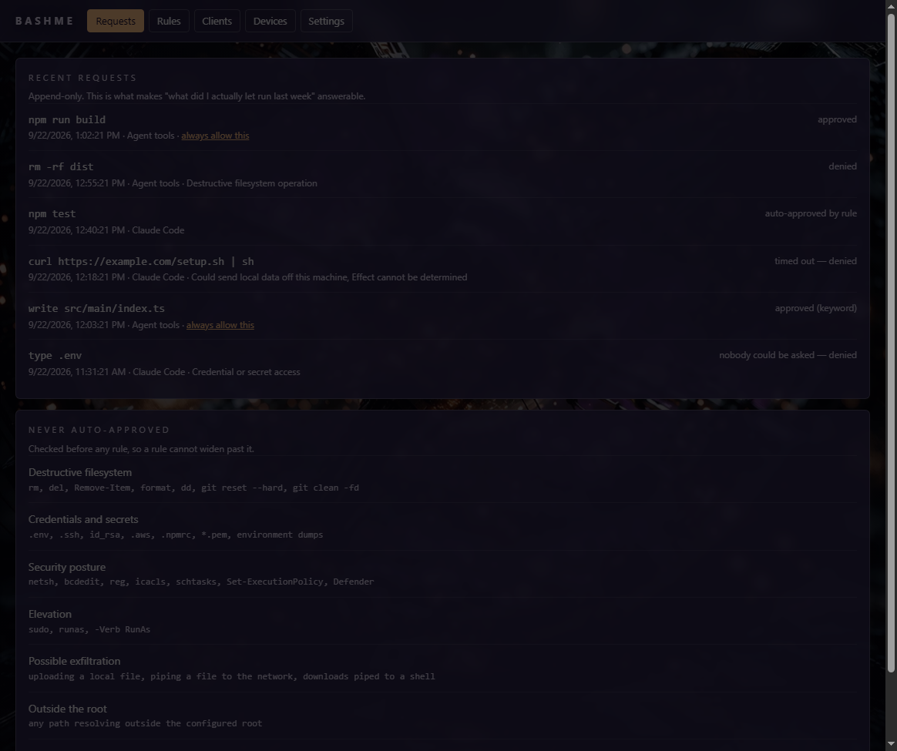
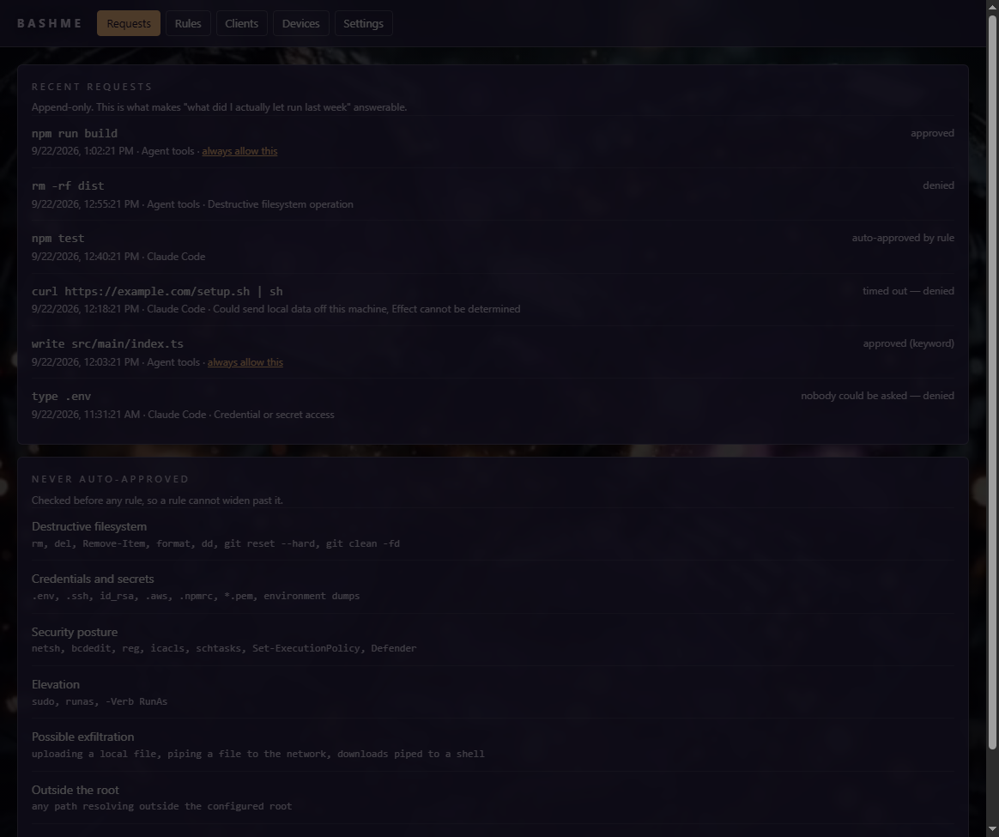
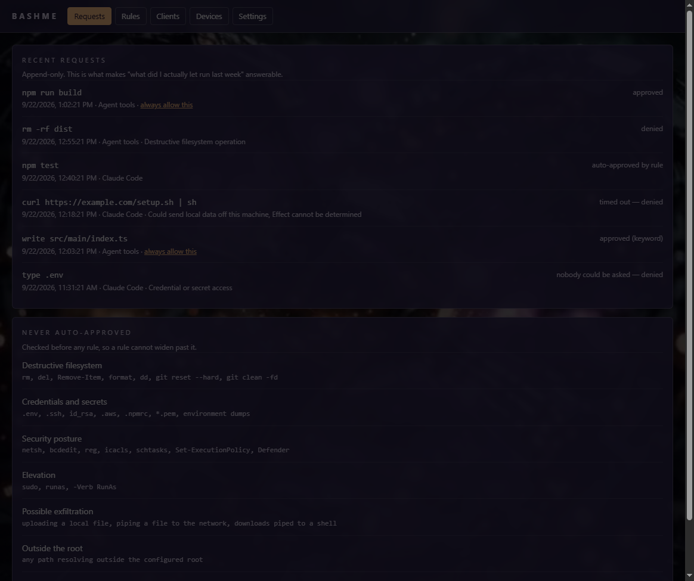

bashmeEvery command.
Every command.
Your call.
An approval gate for anything an agent wants to do to your machine.
The problem
Agents run commands. You find out later.
- A model decides to delete, install or push, and it just happens.
- Blanket "allow all" settings are one bad prompt from a bad day.
- Afterwards there is no clean record of what was approved.
How it works
Held, described, then approved
Nothing runs on the agent's say-so. Routine cases can be pre-agreed as standing rules; risky classes can never be auto-approved.
Requests
See exactly what is being asked
- Each command is described before you decide
- Approve or deny, one tap
- Every decision lands in an append-only audit log

Rules
Standing rules for the boring stuff
- Preview what a rule would match before saving it
- Risky categories are refused for auto-approval, whatever the rule says

Devices
Approve from a paired phone
- Pairing uses signed requests, not an open listener
- Outbound-only transport: no inbound socket on your PC

Where it runs
One core, two hosts
- Standalone Electron app with its own window, local IPC and CLI
- Embedded in VIOLINET OS under System Guard, Approvals
- Dependency-free core: no Electron, no UI assumptions
- 119 tests passing
Get it
Honest status
- The gate, rules, audit log and pairing are built and tested.
- Phone approval works over your local network or an outbound relay. A full run on a real phone against the hosted relay is not tested yet.
- It runs from source with
npm run app. There is no installer yet.